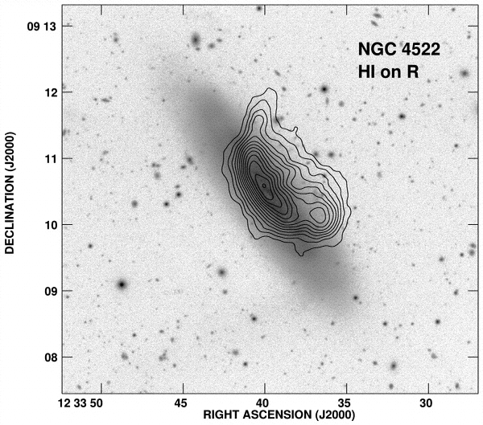
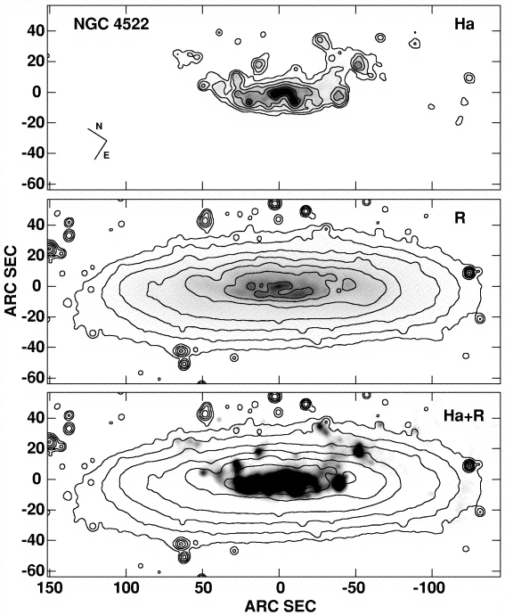
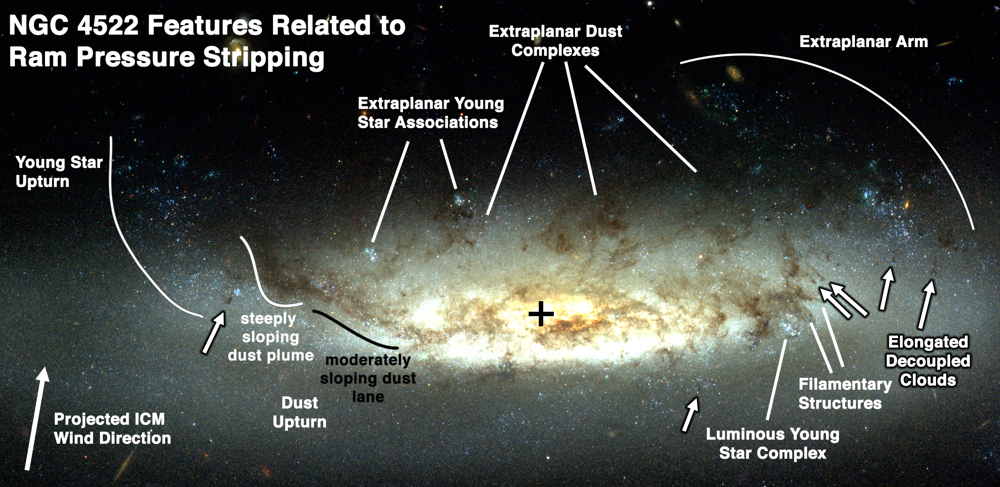

Gas Filaments from the Collision between the Giant Virgo Elliptical M86 and the Spiral Galaxy NGC 4438.
Click on the image to reveal Hα filaments.


Pillars of Dust and Young Stars from Ram Pressure Stripping of the Giant Spiral NGC 4921 in the Coma Cluster
Descriptive text here


×
❮
❯
Ram Pressure Stripping in NGC 4522
NGC 4522 was one the first spiral galaxies with convincing evidence for ongoing ram pressure stripping, as it shows the HI gas removed from the outside-in, a one-sided tail of HI gas, and an undisturbed stellar disk (Kenney et al. 2004). It was the first galaxy shown to have star formation in the ram pressure stripped tail (Kenney & Koopmann 1999), a phenomenon now known as a “jellyfish galaxy”. High resolution HST images (Abramson et al. 2014, 2016) show small dust clouds that are dense enough to resist the initial stripping, so become decoupled from the rest of the stripped ISM, but then become ablated to form linear filamentary clouds.





×
❮
❯